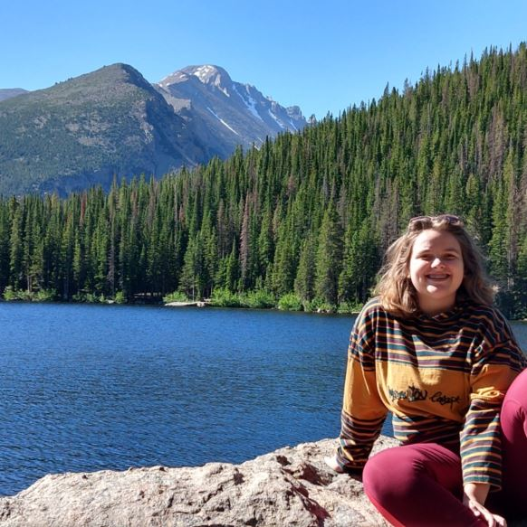
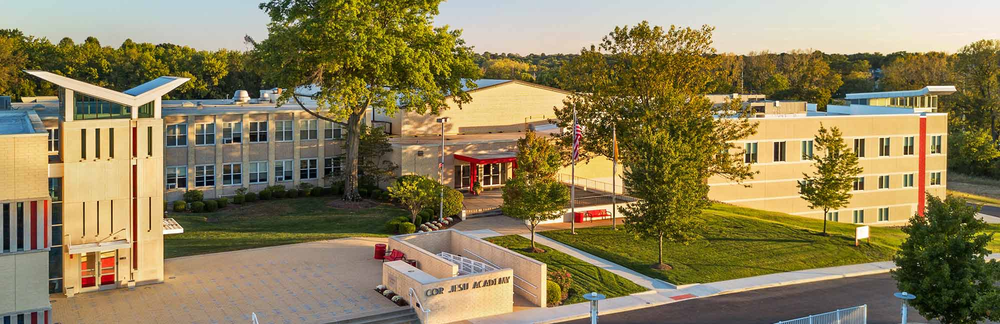
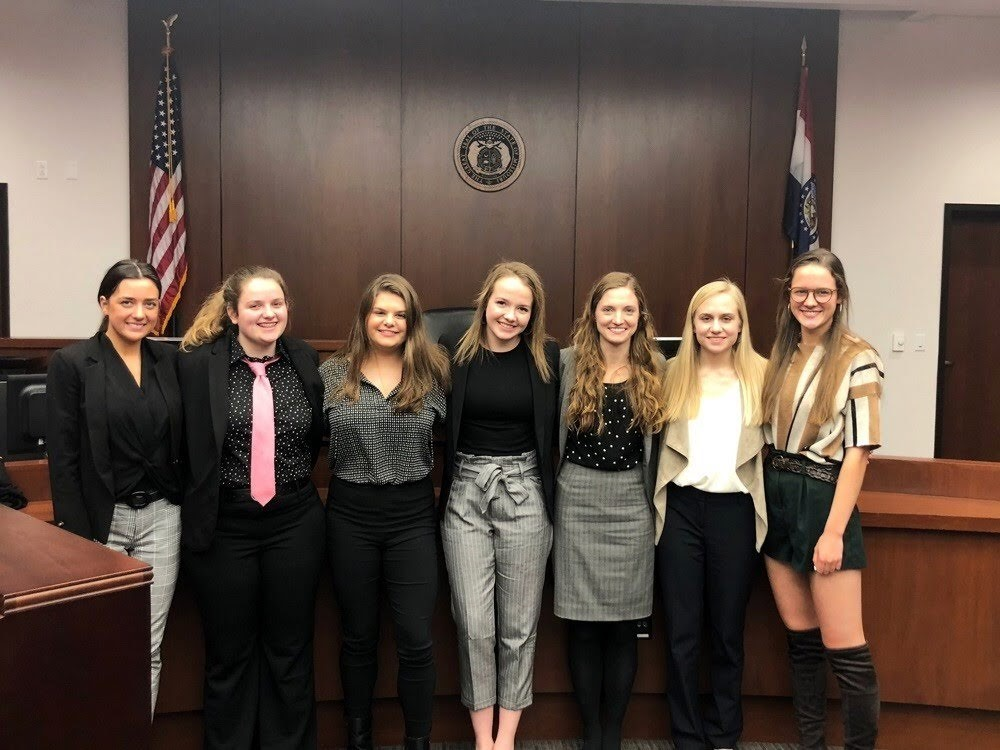
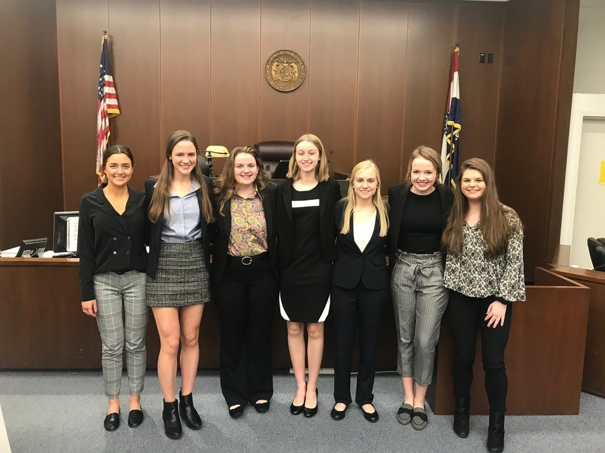
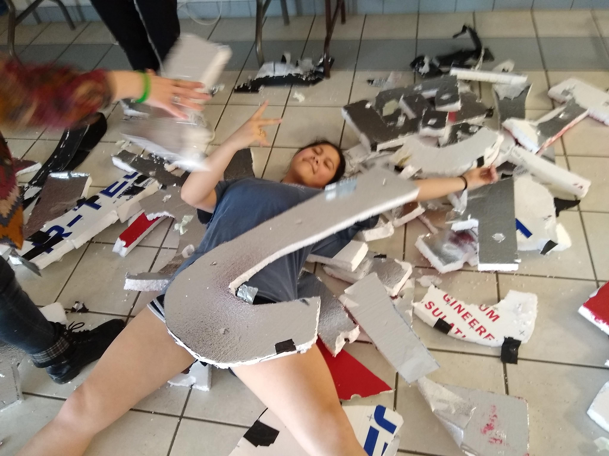
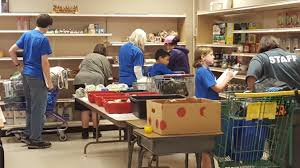
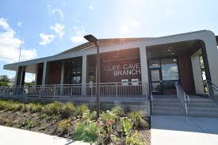
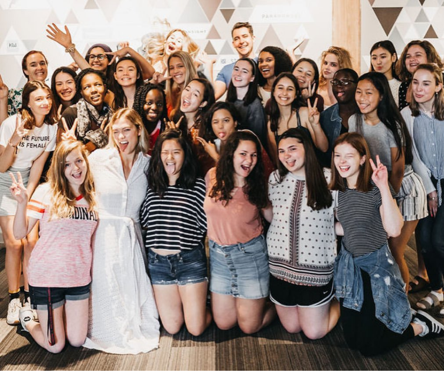
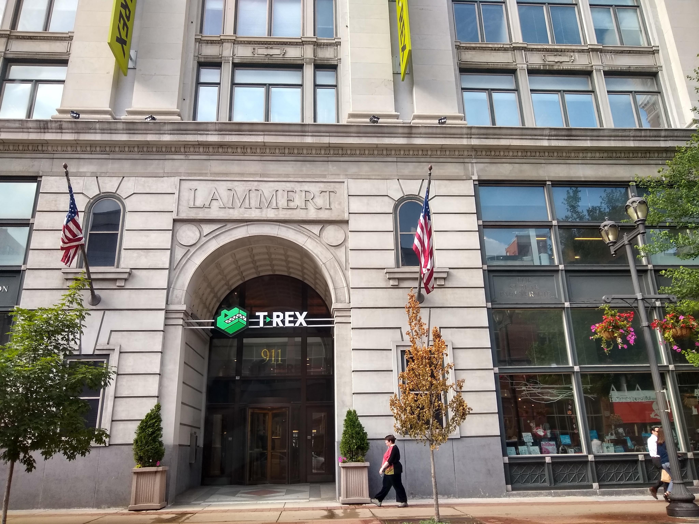

What would you like to know?

Gabriella Miesner is a current high school senior at Cor Jesu Academy with a passion for all things creative.
Her days are currently quite busy due to senior year and other obligations, but in her free time she enjoys reading, listening to music
and podcats, and watching documentaries. She is a nerd at heart and loves to learn.

Gabriella is scheduled to graduate high school in May 2020 and intends to pursue a degree in Computer Science after graduation.
Freshman Year Courses
- Algebra I
- Biology
- Computer Applications
- Concert Choir I
- Introduction to Composition and Literature
- Physical Education I
- Spanish I
- Theology I
- World History I
Sophomore Year Courses
- AP World History / World Studies
- Chemistry
- Concert Choir II
- Geometry
- Spanish II
- Theology II
- Visual Basic Programming
Junior Year Courses
- ACC Spanish III
- ACC United States History
- ACP American Literature
- ACP Writing
- Algebra II
- Health Education
- Honors Personal Finance
- Physics Mechanics
- Special Topic in History
- Theology III
Senior Year Courses
- ACC American Politics
- ACC Comparative Government and Politics
- ACP Late British Literature
- ACP Novels
- AP Statistics
- Ecology
- Genetics
- Marketing
- Introduction to Statistics
- Theology IV
- Web Development



- I was a camp counselour at Camp Galena in Summer 2017 and 2018.
We worked on planning the camp starting in February and helped to shape our campers into leaders during the week-long sleepaway camp.
- I founded and served as the President for my school's CLIC CLUB (Contested Literature Influenced by Culture) during my Sophomore Year. I planned and lead our meetings.
- I served as my school's Diversity Club Vice President my Junior Year and as the President my senior year. I created posters for the Culture Wall in the school, planned, and lead meetings.
- I served as the head of the Fall Play's inaugural Marketing Crew. I ran social media accounts, created posters, and designed tickets and a program for the production.
- I served as the head of the Spring Musical's Marketing Crew my Junior Year. My Senior Year, I was a head of the inaugural Mouse Crew, which combined Ticket, House, and Marketing Crews.
- I served as the Co-Chair of National Honor Society's House Committee my Junior Year and as the Chair my Senior year.
I scheduled people to work the House of the auditorium for production week, lead them during their duties, and made sure that everything ran smoothly during production week.
- I served as the coach of younger mock trial teams by Sophomore and Junior Years.
As a coach, I taught younger students courtroom knowledge and edited their documents. During my Sophomore and Junior Years I served as the captain of my mock trial team during normal BAMSL season.


Work Experience
- I worked at JcPenney as a Cashier and Stocker my Junior Year.
- I currently work as buser at St. Margaret Mary Parish Center and started working there at the begining of my Junior Year.
Volunteer Experience
- I volunteered at the St. Louis County Library during Summer 2018 and 2019. I worked with patrons in the Summer Reading Program.
- I volunteered at the Affton Christian Food Pantry starting my Sophomore Year and continuing until now.
I work stocking food and helping with deliveries.


- I attended a Swift camp during Summer 2019 through Kode with Klossy and created a minimum viable product for an iOS app.
- I attended a Python camp during Summer 2019 through GlobalHack and created a text adventure game.
- I am currently enrolled in the C#/.Net track through LaunchCode's CoderGirl, which is a local career training center for programmers.
- I am currently enrolled in an online AP Computer Science A class and intend to take the exam this May.
Return to Home